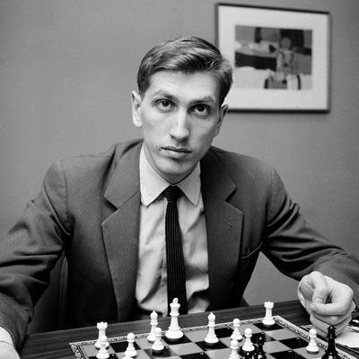

Bobby Fischer
Roberts Džeimss Fišers ( angļu : Robert James Fišers , 1943 . gada 9. marts — 2008 . gada 17. janvāris ) bija amerikāņu šaha lielmeistars un vienpadsmitais pasaules šaha čempions. Būdams šaha brīnumbērns, 14 gadu vecumā viņš uzvarēja pirmo no astoņiem rekordaugstiem ASV čempionātiem. 1964. gadā viņš uzvarēja ar rezultātu 11:0, kas ir vienīgais perfektais rezultāts turnīra vēsturē. Kvalificējoties 1972. gada pasaules čempionātam, Fišers ar Marku Taimanovu un Bentu Larsenu uzvarēja ar 6:0. Pēc kārtējās uzvaras kvalifikācijas spēlē pret Tigranu Petrosjanu Fišers Islandes pilsētā Reikjavīkā uzvarēja titula spēlē pret PSRS Borisu Spaski. Mačs, kas tika publicēts kā aukstā kara konfrontācija starp ASV un PSRS, izraisīja lielāku interesi visā pasaulē nekā jebkurš šaha čempionāts pirms vai pēc tam.
1975. gadā Fišers atteicās aizstāvēt savu titulu, kad nevarēja panākt vienošanos ar FIDE, šaha starptautisko vadības iestādi, par spēles nosacījumiem. Līdz ar to padomju sāncensis Anatolijs Karpovs pēc noklusējuma tika nosaukts par pasaules čempionu. Pēc tam Fišers pazuda no sabiedrības redzesloka, lai gan dažkārt parādījās ziņojumi par nepareizu uzvedību. 1992. gadā viņš atkal uzvarēja neoficiālā revanša cīņā pret Spaski. Tas notika Dienvidslāvijā, kurā tobrīd bija ANO embargo. Viņa līdzdalība izraisīja konfliktu ar ASV valdību, kas brīdināja Fišeru, ka viņa dalība mačā pārkāps izpildrīkojumu, kas nosaka ASV sankcijas Dienvidslāvijai. ASV valdība galu galā izdeva orderi viņa arestam; vēlāk Fišers dzīvoja kā emigrants. 2004. gadā viņu arestēja Japānā un vairākus mēnešus turēja apcietinājumā par ASV valdības atsauktās pases izmantošanu. Galu galā ar īpašu Islandes parlamenta aktu viņam tika piešķirta Islandes pilsonība, ļaujot viņam tur dzīvot līdz viņa nāvei 2008. gadā.

Bobby Fischer visbiežāk lietoti šaha "atvērumi"
- "Sicīlijas atklāšana"
Sākas ar gājieniem:1. e4 c5
- The King s Indian Attack
Sākas ar gājieniem: 1.Nf3 d5 2.g3
- The King’s Indian Defense
Sākas ar gājieniem: 1. d4 Nf6 2. c4 g6
Uz iepriekšējo lapu